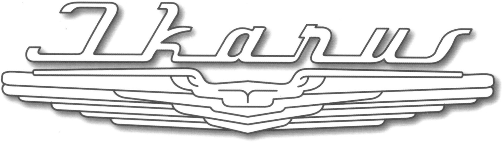

Az Ikarus gyár, a Csepel-Steyr együttműködés keretében 1952-ben kezdte meg a hathengeres, 91,5 kW-os, rendkívül zajos motorral felszerelt, 0-2-2 ajtóelrendezésű, 24 ülő és 37 álló utas szállítására alkalmas, Ikarus 60 és 601, 602 típusú, közepes méretű autóbusz gyártását.
1951-től gyártott Ikarus 30-as típus megjelenése a hazai járműgyártás egyik fontos epizódja volt, azonban a járművel szemben időközben felmerült kifogások a tágasabb utastér a korszerűbb formaés az olcsóbb előállítás iránti igény egy újabb modell létrehozására ösztönözték a tervezőket.
1954-ben hatalmas meglepetéssel szolgált az IKARUS gyár: megindította az Ikarus 55 típusú, nagyméretű önhordó-vázas, farmotoros távolsági autóbusz sorozatgyártását. Vonalvezetése, szerkezeti megoldásai forradalmi újítást jelentettek az autóbuszgyártás történetében.
A csuklós változat gyártásának mielőbbi megkezdését sürgette, hogy ekkorra már több európai autóbuszgyártó (így a Mercedes, a Saurer és a Henschel) is készített ilyen autóbuszokat, de itthon is jelentős igény mutatkozott erre a járműfajtára, amit a FAÜ 1960-ban megkezdett nagyszabású csuklósítási programja is bizonyított.
Az Ikarus 60 típusú autóbuszok alvázába a padló alá Ganz villanymotort építve 1952-től trolibuszok gyártását is megkezdték. A Fővárosi Villamosvasút (FVV) trolibusz üzeme részére 1952 és 1956 között összesen 157 darab trolibuszt szállított a gyár.
Háború előtt az orrmotoros buszokkal egy időben egy újfajta kialakítású busz is megjelent a fővárosban, a motorral egybeépített vezetőfülkés, úgynevezett „trambusz” kialakítású MÁVAG Tr4 prototípus. Több nem is készült belőle ez az egyetlen darab 1940-ben állt forgalomba. A további beszerzést a háború egy időre megakadályozta.